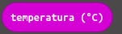
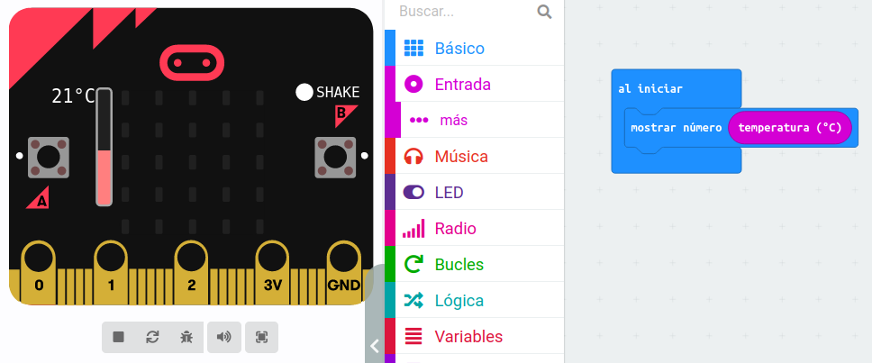
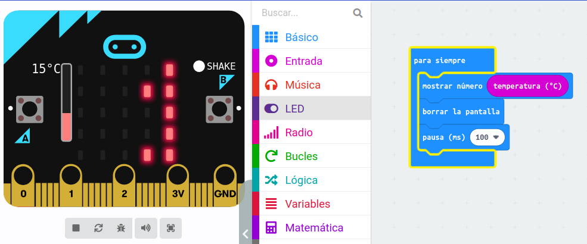

El sensor de temperatura integrado en la placa detecta la temperatura ambiente en grados Celsius. Podemos acceder a ese valor utilizado la variable temperatura del bloque de instrucciones de entrada:

Por ejemplo, el siguiente código mostrará la temperatura ambiente cuando se inicie el programa Micro:BIT:

Si queremos que la temperatura se muestre de forma continua y que se vaya actualizando tendremos que usar el siguiente código:

En este caso, mientras la tarjeta esté encendida se mostrará la temperatura ambiente. Después, se borrará la pantalla y, tras una pausa de 100 ms, se volverá a repetir el proceso.